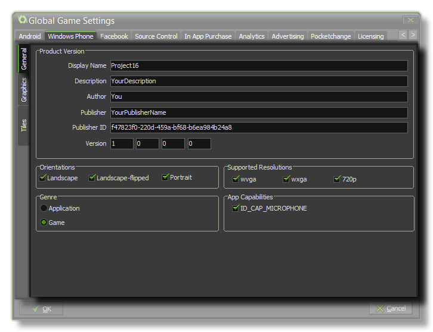
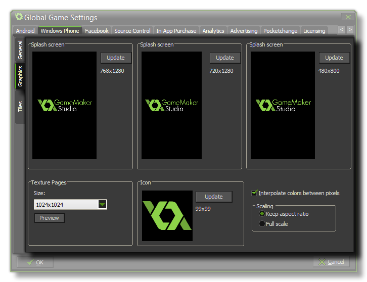
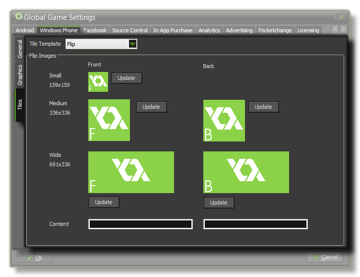
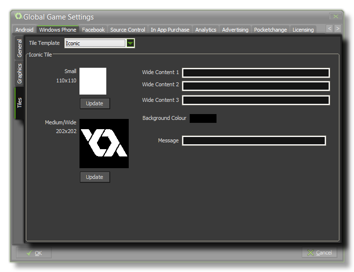
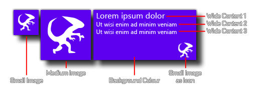
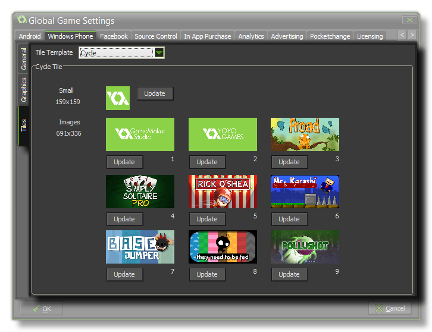

This Windows Phone 8 tab is split into three separate sub-tabs (accessible on the left of the window) to make changing and updating the information for your game clearer and less complicated. These tabs are explained in the following sections.
 The first
thing to do is fill in the details about your game, including its
Display Name, its Description (which should be a
short text), the Author name, the Publisher and the
Publisher ID, and finally the Version info.
The next two sections on this tab are Orientation and
Supported Resolutions. The orientation section can be used
to lock the game to a specific orientation by checking either
landscape or portrait, or landscape-flipped,
while the resolution section is used to target specific displays.
The following table shows the resolutions and ratios supported:
| Name | Resolution | Aspect Ratio | Scaled resolution |
|---|---|---|---|
| WVGA | 480 × 800 | 15:9 | 480 × 800 |
| WXGA | 768 × 1280 | 15:9 | 480 × 800 |
| 720p | 720 × 1280 | 16:9 | 480 × 853 |
Finally for this tab, you should indicate the Genre of the
final product, which can be either Game or
Application, and you can also flag the game as having access
to the microphone for recording audio.
 Here you can
give your game an Icon and different Splash Screens.
The icon should be authored as an individual *.png file
with a size of 99x99px. The splash screens should be made to the
sizes of each of the available Windows phone resolutions in
*.png format, and it will briefly be shown while the game
assets are being loaded.
At the bottom there is the option to set the size of the Texture
Page. The default (and most compatible) size is 1024x1024, but
you can choose from anywhere between 256x256 up to 2048x2048. There
is also a button marked Preview which will generate the
texture pages for this platform and then open a window so that you
can see how they look. This can be very useful if you wish to see
how the texture pages are structured and to prevent having texture
pages larger (or smaller) than necessary.
NOTE: Be aware that the larger the size of the texture
page, the less compatible your game will be.
Finally there is the option for interpolation and for scaling.
Checking Interpolate colours between pixels turns on
interpolation, which basically "smooths" pixels. For crisp pixel
graphics, it should be off, but if you have nice alpha blends and
smoothed edge graphics it is better left on. For scaling to the
device screen, here you can choose to maintain aspect ratio (so a
4:3 room, for example, will be "letter boxed" on a 16:9) or to
scale fully (stretching the image to fit the full screen).
WARNING! Switching off the application surface will
disable all the scaling options set in the Global Game Settings
until it has been switched back on again. See The
Application Surface for further details.
The Tiles sub-tab is further split into three separate groups,
of which you should choose one to represent how the Live Tile that
represents your game or app will be shown on the device.
 Flip tiles are
ones that will change from one "side" to another every few seconds,
and here you can add the different images that you wish each "side"
to show. Note that the smallest possible tile size does not
flip and so you only need to supply one 159x159px image for that,
while the other two sizes (medium 336x336px and wide 691x336px)
will. Beneath the images you can also supply to Content
strings. These will be shown on the back tile only, with the
first string being for the medium size and the second one being for
the wide size.
 The Iconic
tile setting uses two images (small at 110x110px and medium at
202x202px) and a series of different text messages to display
information about your game. If the user has reduced the tile size
to the smallest or the medium size, then the respective images will
be shown only, however when the user has a wide tile size selected,
then the image will be displayed as an icon in the lower right of
the tile and various lines of text will be displayed starting at
the top right of the tile. The image below illustrates this:

Note that an Iconic Tile image will only ever be white, so
the image chosen should be a single "silhouette" with alpha. No
matter what your image, it will only ever be shown on an Iconic
tile as a white image over a transparent background.
 The final tile
type is the Cyclic one. This permits you to specify a small image
(159x159px for the small and medium sizes) and a series of 9
different wide tile images (691 x 336px) that will be cycled using
various different transitions.